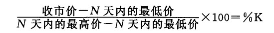

随机指数的图表由两根曲线组成，它们分别是%K线和%D线。其中，%K线称为原始随机线，或者称为快%K线。这条曲线最为灵敏。%K线值的计算公式是：

其中，收市价=当前收市价；
N天内的最低价=N天内总的价格范围的最低价；
N天内的最高价=N天内总的价格范围的最高价。
公式中的数值“100”将公式的数值转化为一个百分数值。因此，如果今天的收市价与我们所研究的时间范围内最高价一致，那么快%K值就等于100。上述的时间范围既可以选择为若干天，也可以选择为若干星期，甚至可以选择为若干个日内时间单位（比如若干小时）。9、14、21个时间单位是几个较为常见的时间参数。
因为快%K线十分起伏不定，所以通常我们以这条线为基础，每三个数值计算出一个移动平均值，得出一条较为平滑的三时间单位移动平均线。这条%K线的三时间单位移动平均线就称为慢%K线。绝大多数技术分析师用这条慢%K线代替那条变化；无常的快%K线。下一步，我们对这条慢%K线再进行一次三时间单位的移动平均，得到了慢%K线的三时间单位移动平均线，称为%D线。实质上，这条%D线是移动平均线的移动平均线。如果想要弄清楚上述%K线与%D线之间的区别，那么我们不妨把它们设想为一个双移动平均线组合，其中慢%K 线相当于一条较短期的移动平均线，而%D线相当于一条较长期的移动平均线。